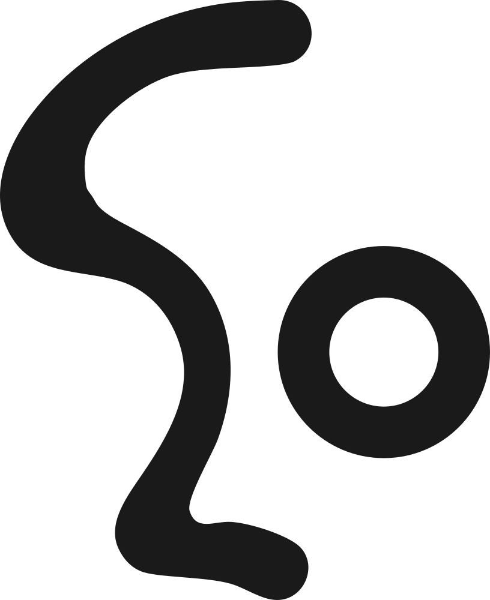
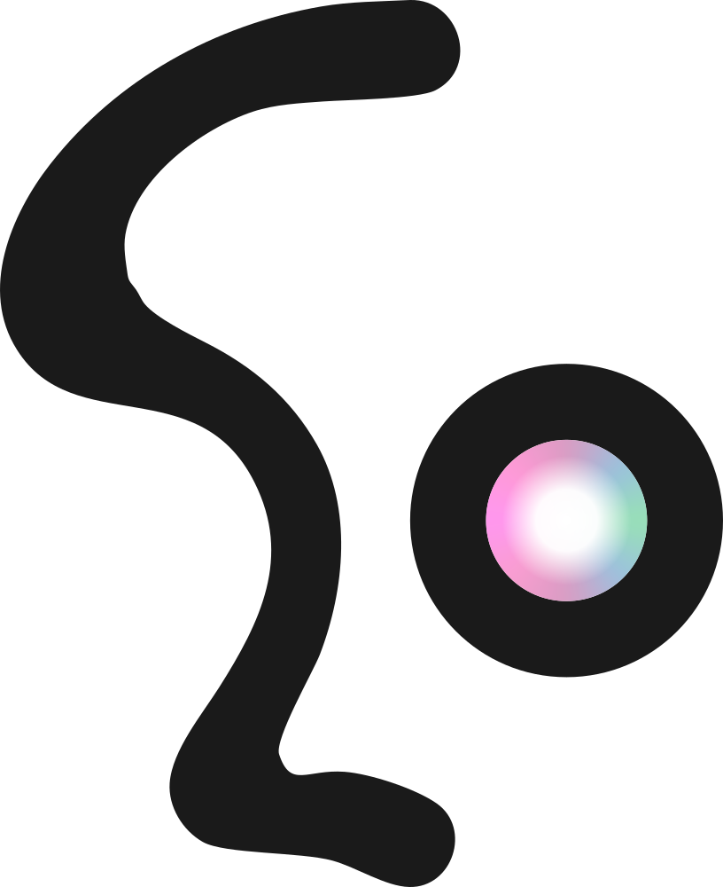
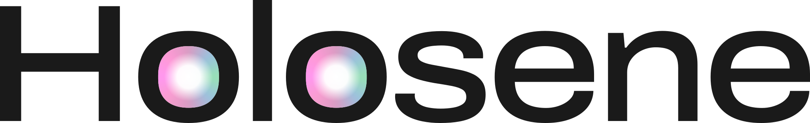
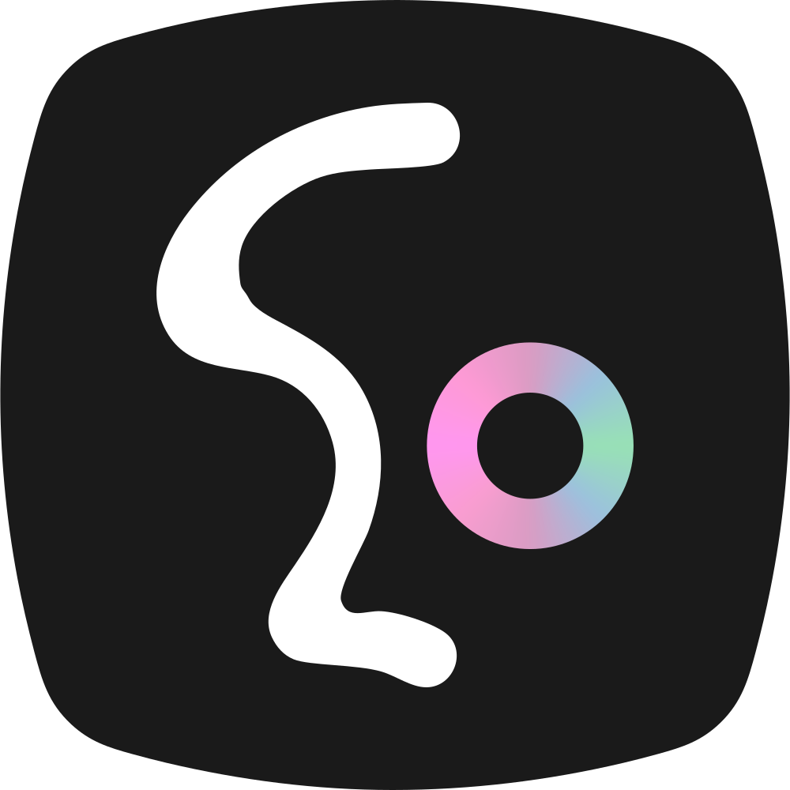
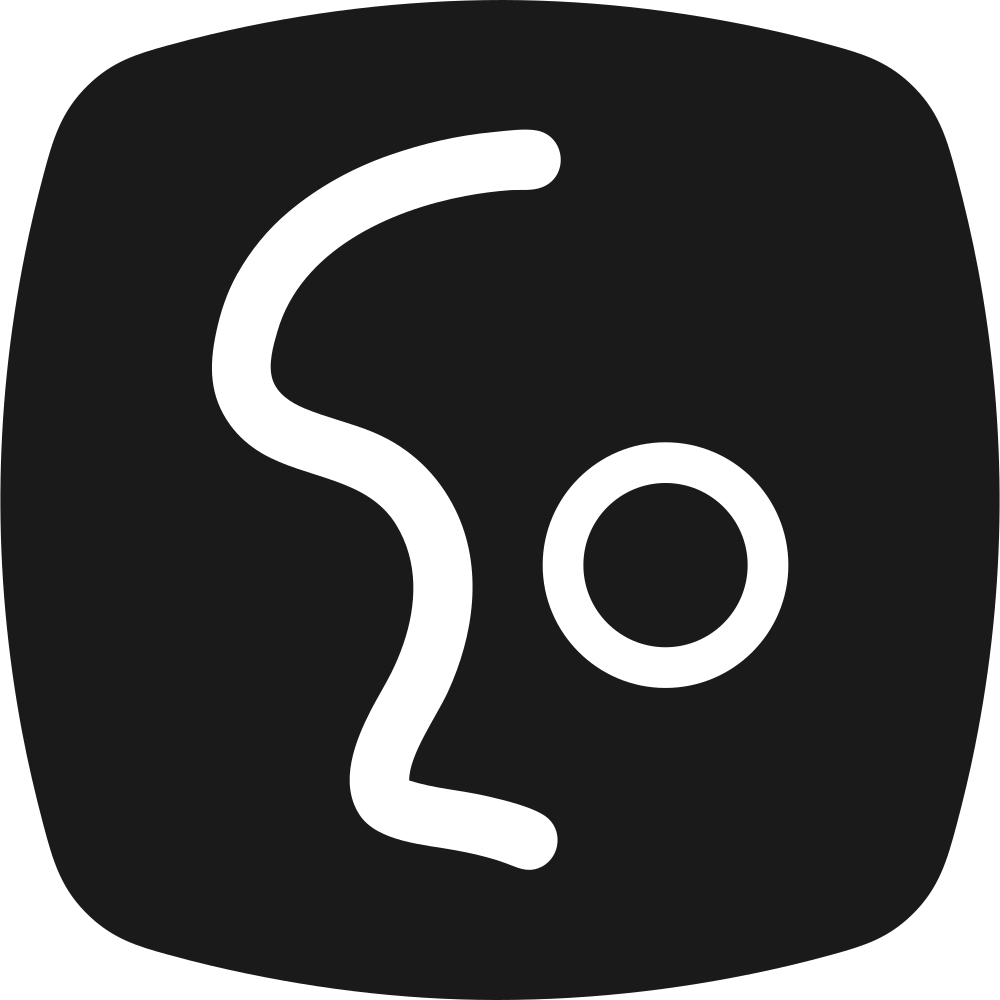
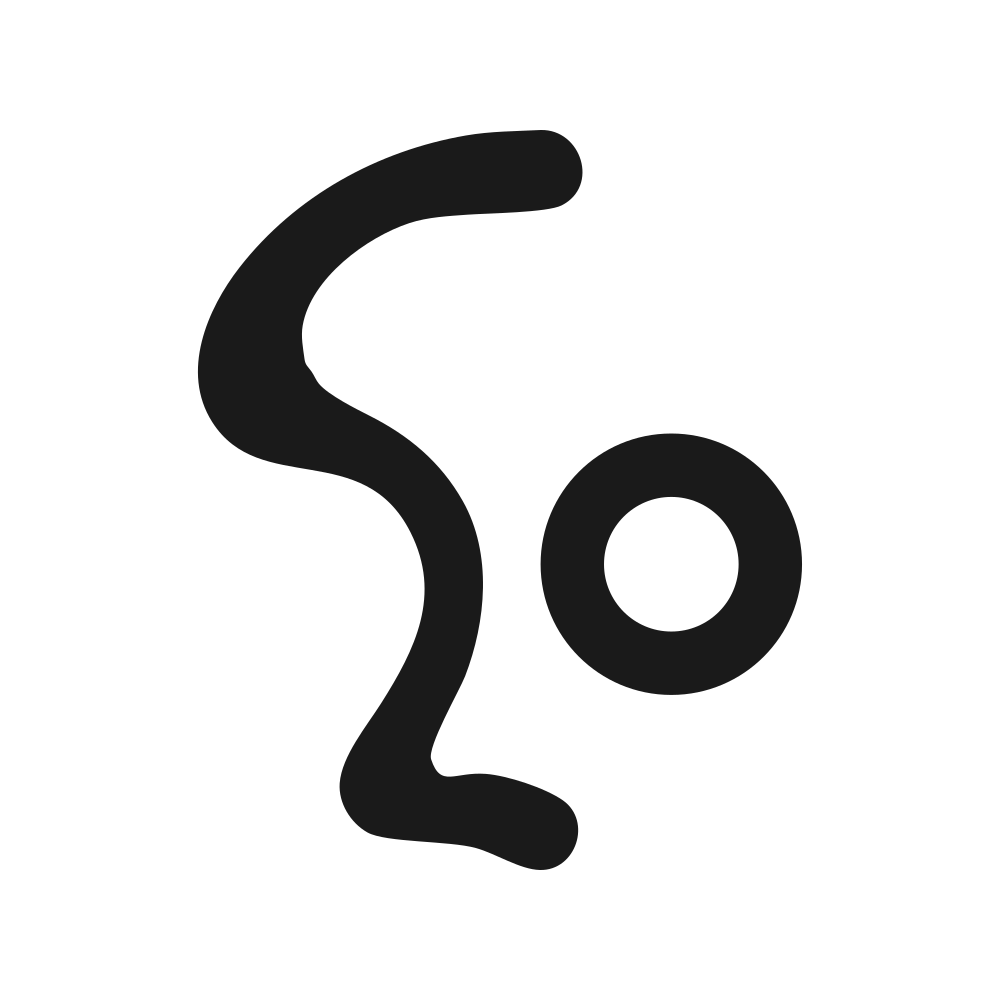
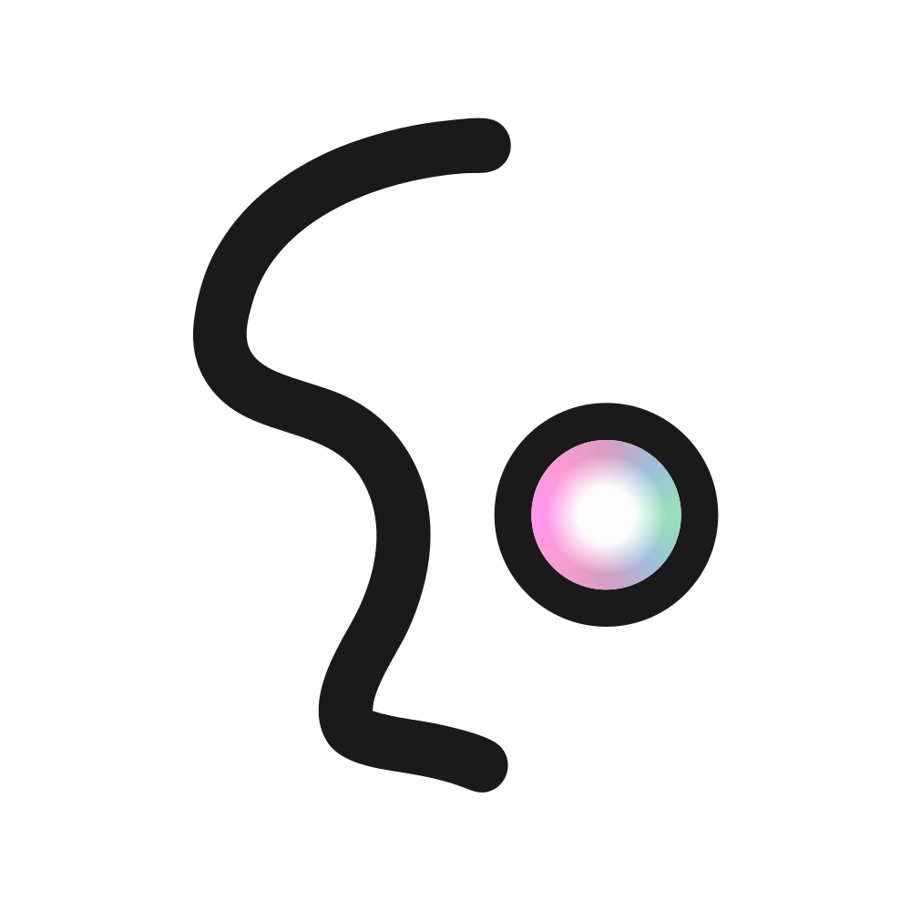
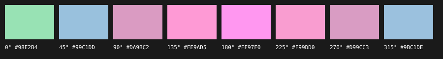

Guide de marque
Holosene est le studio de Johann Arata : capter le réel et le transformer en volumes et en images 3D. L'identité réunit un tracé organique (le « S », un mouvement d'eau, un profil) et un point optique (le « o », lentille ou point de capture), avec une seule lumière : l'irisé.
Document interne, non publié. Les fichiers sont dans brand/ ; ne jamais redessiner le logo.
01 · Logo
Monogramme et logotype
Le monogramme « So » est le signe principal ; le logotype « Holosene » l'accompagne ou le remplace quand il faut nommer le studio. Version sombre par défaut. Fichiers vectoriels uniquement (SVG), jamais recomposés au clavier.

Blanc sur noir — par défaut

Irisé sur noir — anneau

Noir sur blanc

Irisé sur blanc — cœur lumineux
Logotype blanc

Logotype irisé (les « o » seulement)

Logotype noir

Logotype irisé sur blanc

Icône — favicon, application

Icône noire

Icône blanche

Icône blanche irisée
Construction
Le bord gauche du « S » — un profil — est la ligne maîtresse ; l'épaisseur, modulée (pleins et déliés), se construit depuis ce profil vers l'intérieur. Le « o » est un cercle parfait dont l'anneau vaut 92 % de l'épaisseur du « S » (correction optique : une forme fermée paraît plus lourde). Recherche détaillée : brand/research/.
Zone de protection
Unité x = diamètre extérieur du « o » (≈ 35 % de la hauteur du monogramme). Aucun élément dans une marge de 1 x autour du monogramme. Pour le logotype, x = hauteur du « H ».
Monogramme · marge 1 x
Logotype · marge 1 x (hauteur du H)
Tailles minimales
| Élément | Écran | Impression | Exemple réel |
|---|---|---|---|
| Monogramme seul | 24 px de haut | 8 mm | |
| Monogramme dans l'icône | 16 px (favicon) | — | |
| Logotype | 96 px de large | 25 mm | |
| Irisé visible | monogramme ≥ 48 px | ≥ 15 mm | en dessous, utiliser la version blanche ou noire |
02 · Couleurs
Noir, blanc, gris — et une lumière
Valeurs mesurées sur la planche. Le site est sombre par défaut ; l'irisé reste rare.
| Texte | Fond | Contraste | WCAG AA (texte courant 4,5:1) |
|---|---|---|---|
| Blanc #FFFFFF | Noir #1A1A1A | 17,4:1 | oui (AAA) |
| Gris clair #D9D9D9 | Noir #1A1A1A | 12,3:1 | oui (AAA) |
| Gris texte #A0A0A0 | Noir #1A1A1A | 6,7:1 | oui |
| Gris neutre #5F605F | Noir #1A1A1A | 2,8:1 | non — jamais pour du texte sur fond sombre |
| Noir #1A1A1A | Blanc | 17,4:1 | oui (AAA) |
| Gris neutre #5F605F | Blanc | 6,3:1 | oui |
| Irisé (5 teintes) | Noir #1A1A1A | 7,8 à 11,5:1 | lisible, mais réservé aux accents |
| Irisé (5 teintes) | Blanc | 1,5 à 2,2:1 | non — jamais de texte irisé sur fond clair |
03 · Irisé
La seule lumière
Un dégradé conique autour du « o » : menthe à droite, bleu lavande en diagonale, mauve en haut et en bas, rose à gauche. Sur fond clair, un cœur blanc s'y ajoute. Il est défini une seule fois et partagé par le SVG, le CSS et la 3D (GLSL) : brand/iridescent/.
Anneau — fond sombre
Cœur lumineux — fond clair

Arrêts 0° → 315°
Où l'utiliser — et seulement là
Le « o » du logo · un état de survol ou de sélection · le curseur · l'indicateur de chargement · une lumière dans la 3D (contours des nuages de points, selon l'angle de vue). Jamais sur un aplat de fond, jamais sur un paragraphe, jamais plus d'un élément irisé par écran.
/* CSS */ background: var(--iris-conic); /* anneau, survol */ background: var(--iris-core), var(--iris-conic); /* cœur lumineux, fond clair */ // GLSL (brand/iridescent/iridescent.glsl) vec3 c = iris(uv); // uv : position autour du centre, dans [-1, 1] float glow = irisCore(r / rIn); // cœur blanc
04 · Typographie
Une famille, deux largeurs
Le logotype est dessiné avec Archivo (Omnibus-Type, SIL Open Font License : usage web et commercial libre). La même police variable sert aux titres (largeur 120 %, graisse 500, approche -0,04 em) et au texte (largeur 100 %, graisse 400). Les étiquettes sont en IBM Plex Mono (OFL), capitales espacées.
Titre · Archivo 120 % · 500
Capter le réel
Texte · Archivo 100 % · 400 · 17 px / 1,55
Des volumes et des images 3D à partir de captations : nuages de points, Gaussian splatting, film.
Étiquette · IBM Plex Mono · 12 px · capitales
Rivière · 2025 — 26 · 4DGS
| Niveau | Taille | Usage |
|---|---|---|
| Hero | 48 → 120 px (fluide) | un seul par écran |
| Titre 1 | 36 → 64 px | titres de page et de section |
| Titre 2 | 24 → 36 px | titres de projet, sous-sections |
| Texte | 17 px | paragraphes, 62 caractères par ligne au plus |
| Petit | 14 px | légendes, crédits |
| Étiquette | 12 px mono, capitales, +0,06 em | métadonnées (année, milieu, technique) |
05 · Formes
Le squircle
La forme de l'écran et de l'icône : côtés légèrement bombés, coins très arrondis (ajustée sur la planche). Elle encadre les vidéos, les cartes de projets, les boutons et les icônes. Fichiers : brand/squircle/ ; en CSS, à défaut du SVG, les rayons --radius-s / m / l.

Squircle — icônes, vignettes
Cadre vidéo — rayon L 28 px
Carte de projet — rayon L
Boutons — rayon M 18 px
06 · Mouvement
Lent, fluide, organique
Le mouvement suit le tracé du « S » : il coule plutôt qu'il ne bondit. Le réel apparaît à partir des points (dispersion → rassemblement) ; rien ne bouge sans raison. Avec prefers-reduced-motion, toutes les durées passent à zéro et la 3D reste immobile.
Rapide · 180 ms
survol, focus
Base · 420 ms
apparition d'un élément
Lent · 900 ms
changement de section
Scène · 1600 ms
apparition du réel (points 3D)
Courbe : cubic-bezier(0.22, 1, 0.36, 1) — sortie douce
07 · Usages
Correct et incorrect
Fichier d'origine, fond uni
Version noire sur fond clair
Logotype blanc, marge respectée
Blanc sur gris neutre
Déformer, étirer
Faire pivoter
Changer la couleur
Irisé sur tout le signe
Ombre, effet, contour
Fond chargé, contraste faible
Recomposer au clavier · texte irisé
Irisé sous 48 px